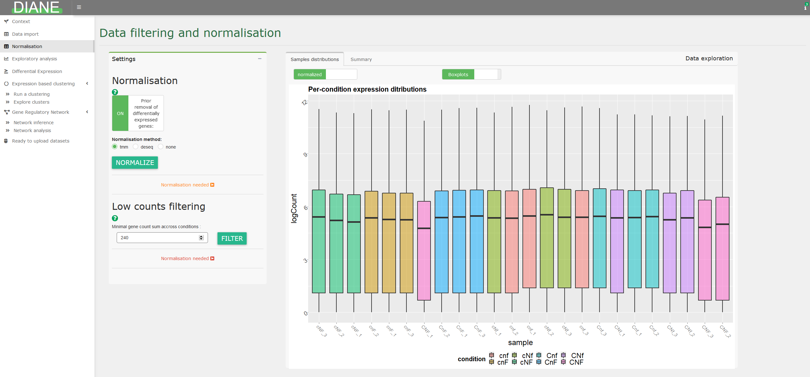

The TCC R package is used for the normalization. step here, to make samples comparable by correcting for their differences in sequencing depths. This step is mandatory before further statistical analysis.
You can choose to normalize using the methods implemented in edgeR, referenced as ‘tmm’, or the one used in DESeq2, referenced as ‘deseq2’.
Those normalization methods rely on the hypothesis that a very small proportion of genes are differentially expressed between samples. If you suspect a lot of genes could be differentially expressed in your data, TCC offers the possibility to proceed to a first detection of potential differentially expressed genes, to remove them, and then provide a final less biased normalization.
In that case, enable “prior removal of differentially expressed genes”. TCC will perform the following setp, depending on the normalization. method you chose :
Removing genes with very low abundance is a common practice in RNA-Seq analysis pipelines for several reasons :
They have little biological significance, and could be caused either by noise or mapping errors.
The statistical modeling we are planning to perform next is not well suited for low counts, as they make the mean-variance relationship harder to estimate.
There is no absolute and commonly accpeted threshold value, but it is recommended to allow only genes with more than 10 counts per sample in average. DIANE thus proposes a threshold at 10*sampleNumber, but feel free to experiment with other values depending on your dataset.